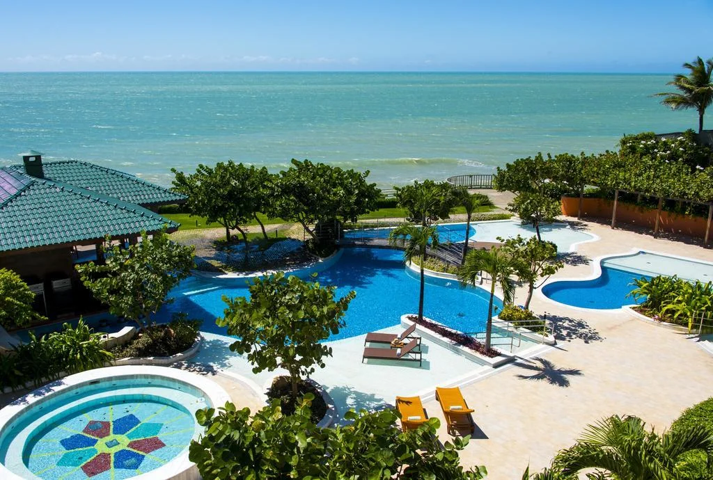

Sobre Esmeralda Praia Hotel
frente à Praia, o Esmeralda Praia Hotel possui uma piscina com jatos de hidromassagem, cromoterapia e vista ao mar, música e apresentações ao vivo e atividades recreativas. Dispõe de área de praia privativa, piscina ao ar livre - o ano todo e wi-fi grátis nas áreas comuns, além de hidromassagem. O hotel oferece sistemas de pensão completa ou all inclusive. As refeições incluem café da manha, composto por doces e pães, frutas, frios e tapioca, e jantar temático, com 7 opções, uma a cada dia. Além disso, conta com lanche da tarde sem custo adicional. No hotel, as crianças terão acesso a uma brinquedoteca com cinema. Entre as comodidades se destacam serviço de spa, sauna, serviço de massagem e estacionamento grátis. Os hóspedes poderão contar com serviço de manobrista e salão de jogos. Por uma taxa, a propriedade conta com traslado ao aeroporto, serviço de lavanderia e serviço de lavagem a seco.
